How to use CrossDeck
Three players, one slider. Pick songs, slide between them, keep the party going.
Quick start: your first mix in 4 taps
- Type a song or artist in Search YouTube and press Search.
- On a song, tap 1. It starts playing on Player 1.
- On another song, tap 2. It starts quietly on Player 2 (10%).
- When you are ready, drag the big slider at the bottom to the right. Song 2 gets louder, song 1 fades away.
Now Player 2 is the main one. Pick the next song with 3 and slide again. After 3 comes 1 again, round and round.
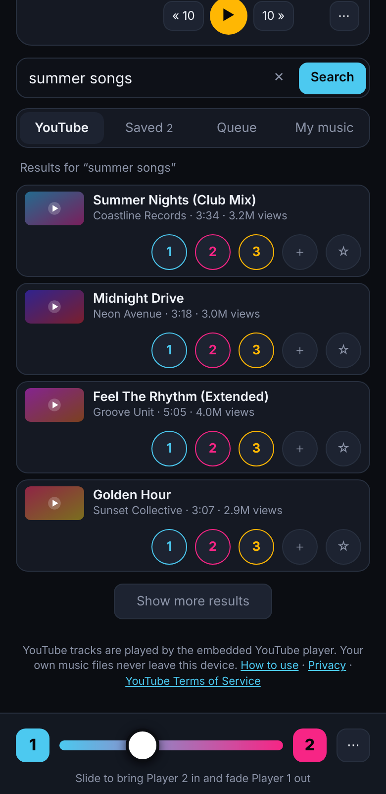
The three players
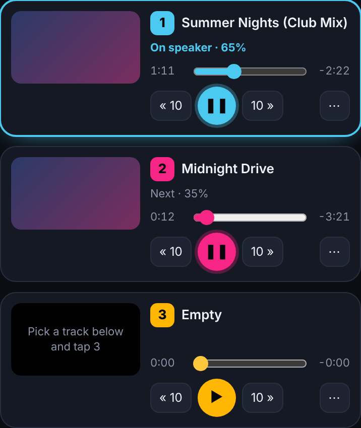
- The glowing player
- This one is on the speaker: it is what the room hears. The line under the title shows how loud it is, for example “On speaker · 65%”.
- “Next”
- The player that the slider will bring in.
- ▶ / ❚❚ Play and pause
- Starts or stops that player. Use it to pause a song you are preparing, or to restart one.
- « 10 10 » Skip
- Jumps 10 seconds back or forward. Use it to skip a long intro or find the part you want.
- The thin bar with a dot
- Shows where the song is. Drag the dot to jump anywhere. Time played is on the left, time left on the right.
- ⋯ More
- Opens extra controls for that player (see More controls). You never need these for a normal party.
Searching YouTube
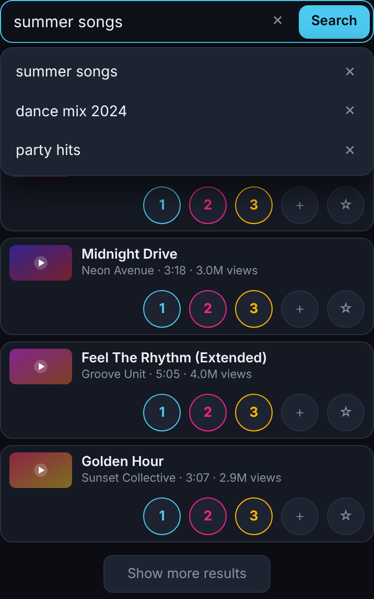
- Search box
- Type a song, artist or mood (“90s dance hits”). Your text stays in the box after searching, so you can change one word and search again.
- ✕ inside the box
- Clears the text.
- Recent searches
- Tap the box to see your last 10 searches. Tap one to search it again. Tap its ✕ to remove it from the list.
- Show more results
- At the bottom of the list. Loads the next page of results.
Results come from YouTube in YouTube's own order. Clips shorter than one minute and live streams are left out because they cannot be mixed.
The buttons on each song
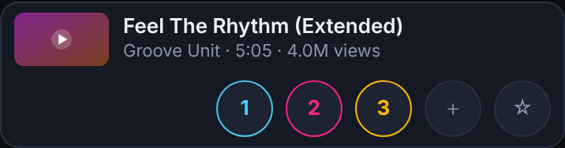
- 1 2 3
- Play this song on that player, straight away. If nothing else is playing it starts at full volume. If a song is already playing, the new one joins quietly at 10% so it does not interrupt.
- ＋ Add to queue
- Lines the song up for Auto DJ. Use it when you want the app to play a list by itself.
- ☆ Save
- Keeps the song in your Saved tab so you can find it next time without searching.
- ✕ Remove
- Shown in Saved, Queue and My music. Takes the song off that list.
The mix slider
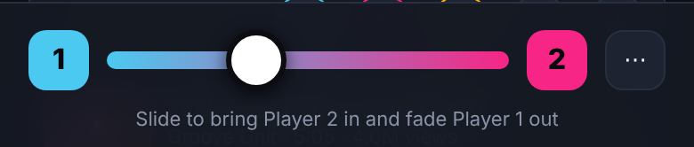
- Left badge
- The player on the speaker now.
- Right badge
- The player that comes next. Tap it to choose the other player as next instead.
- The slider
- Far left: only the current song. Far right: only the next song. In between: both. Slide slowly for a smooth blend, quickly for a sharp cut.
- Letting go at the far right
- The next player becomes the main one, the old one stops, and the slider is ready for the following player: 1 → 2 → 3 → 1.
Good moment to slide: the last 20–30 seconds of the current song, or right after a chorus ends.
The four tabs
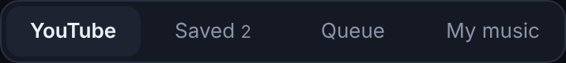
- YouTube
- Search results, or popular music when you have not searched yet.
- Saved
- Songs you kept with ☆, and every song you have played.
- Queue
- Songs waiting for Auto DJ, in order.
- My music
- Music files from your own device or pen drive (see My music).
Auto DJ and extras ⋯
Tap ⋯ at the right end of the mix bar.
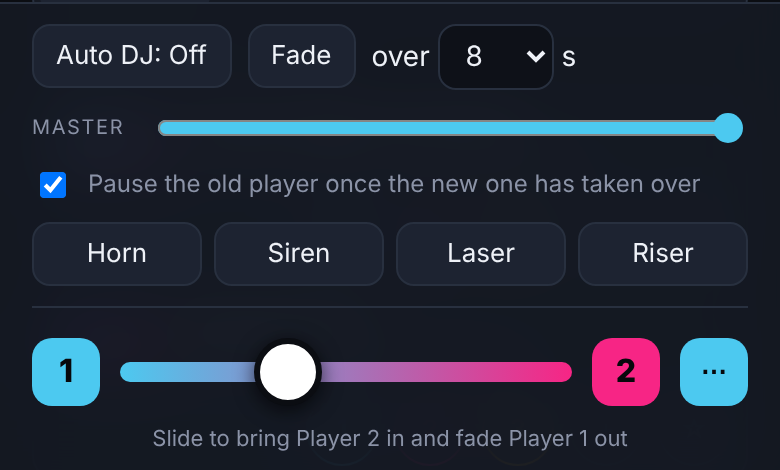
- Auto DJ
- Plays your Queue by itself, moving from player to player with a fade between songs. Use it when you want to dance instead of DJ. Add songs with ＋ first.
- Fade
- Does the slide for you, smoothly, over the number of seconds you choose. Use it when your hands are full.
- Master
- Overall loudness of everything.
- Pause the old player…
- When ticked, the song you mixed away from stops. Untick it to let it keep running silently.
- Horn, Siren, Laser, Riser
- Party sound effects. Use them sparingly: a horn at a drop, a riser before a big chorus.
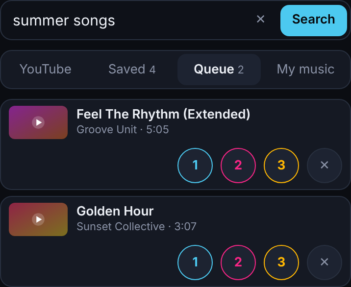
More controls on a player ⋯
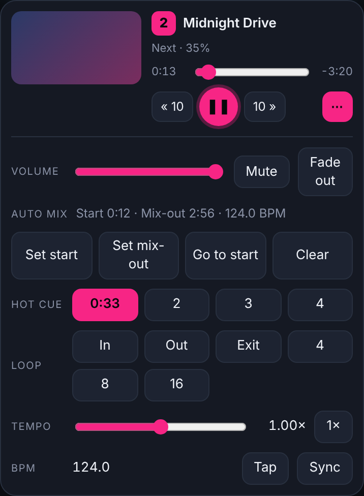
- Volume, Mute, Fade out
- Fine control of one player only. Fade out lowers it gently over 3 seconds; tap again to bring it back.
- Set start
- Play to where the song really kicks in and tap this. Auto DJ will always start this song there. Saved for next time.
- Set mix-out
- Play to where the song should hand over (for example before a long ending) and tap this. Auto DJ will leave the song there.
- Go to start / Clear
- Jump back to the saved start point, or forget the saved points.
- Hot cue 1–4
- Bookmarks. Tap an empty one to remember this moment; tap it again any time to jump back there. Long-press to clear. Use them to replay a favourite chorus.
- Loop In / Out / Exit
- Tap In at the start of a part, Out at its end, and it repeats until you tap Exit. The 4 / 8 / 16 buttons loop that many beats (tap the BPM first).
- Tempo
- Makes the song faster or slower. 1× puts it back to normal.
- BPM: Tap and Sync
- Tap the Tap button in time with the beat a few times to tell the app the song's speed. Sync then matches this song's speed to the other player's.
My music: your own files, mixed on the beat
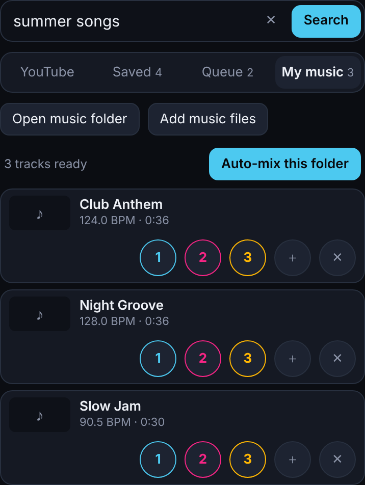
- Open music folder
- Choose a folder on your device or pen drive. The app reads every song in it and works out each one's tempo and beats. Nothing is uploaded.
- Add music files
- Pick individual songs instead of a whole folder.
- Auto-mix this folder
- Plays the whole folder by itself. Each new song starts on the beat, at matching speed, with a smooth 16-beat blend.
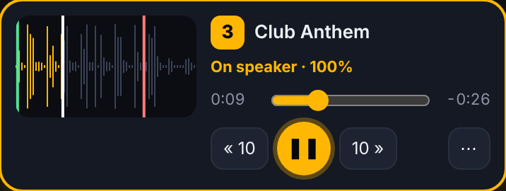
For your own files the player shows the song's sound wave. The green line is the start point, the red line is the mix-out point, and you can tap anywhere on it to jump there. These players also get a 3-band EQ (Low / Mid / High) under ⋯.
Headphones: listen before the room does
On a computer with Chrome or Edge you can hear the next song in headphones while the speaker keeps playing the current one.
- Open Settings and tap Find my sound devices. Allow the permission the browser asks for (nothing is recorded).
- Choose your Speaker and your Headphones, then Save.
- Pick a song from My music for the next player. You hear it in the headphones only. A Phones volume slider appears under ⋯ on the mix bar.
This works for your own music files only. YouTube videos cannot be sent to a second device, and phone browsers cannot choose between sound devices.
If something goes wrong
- A video will not play (“owner does not allow…”)
- Some music labels block their videos outside YouTube. Pick another upload of the same song.
- A song starts silent
- Tap the video once. Some phones only allow sound after you touch the video itself.
- An advert plays
- Adverts come from YouTube and cannot be skipped by the app. Start the next song a little early so an advert has time to finish before you slide over.
- Music stops when I switch apps
- YouTube videos must stay on screen to play. Your own music files keep playing in the background.
- Search says the limit is reached
- YouTube allows a limited number of searches per day for the whole app. Saved songs and pasted YouTube links still work.